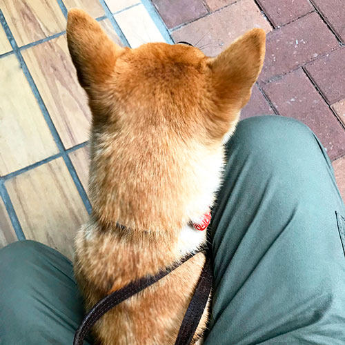

当サイトについて
当サイトは職業訓練の実習を目的として作られたポートフォリオサイトです。
以下は、制作についての説明となります
|
サイト企画概要
|
|
|---|---|
| 目的 | 柴犬の可愛さ、飼う事の大変さを伝えたい。 |
| ターゲット | 柴犬が好きな人、飼いたいと思っている人。 |
| べースカラー | 水色（散歩に行っているような爽やかさをイメージ） |
| フォント | Kosugi Maru（丸みがあり可愛らしいイメージ） |
| 使用言語 | HTML＆CSS、JavaScript |
| 制作期間 | 1ヶ月(訓練修了後＋1週間) |
| 備考 | 著作権を考慮し、テキスト内容・素材などサイト内の物はすべて自作しました。 |
●デザインカンプ(期間：1週間)
使用ソフト:adobe XD
デザインで気をつけた事
全体イメージは「可愛らしさ」です。
柴犬の素朴な可愛らしさを、素材を鉛筆風で作成し手作り感を出す事で表現しました。
飼う事の大変さを伝えたい所では責任の重さを伝えたかったのであえて文字のみで構成しました。
デザインカンプSP


デザインカンプPC

●素材作成(期間：全1～2週間、他工程の合間の為)
使用ソフト:Photoshop・Illustrator
写真加工
Photoshopを使用し、スマートフォン撮影の画像をサイト用に加工。サイズ・明るさ・コントラストを変更。
例）元画像をコピー後ゴミ取りし、片方にぼかしとマスクを使い毛並みをふわっと見えるよう調整しました。(作業時間:10分)
=修正前=

=修正後=
ロゴ・アイコン・GIFアニメーション
・ロゴ、アイコンはIllustratorで作成、徐々にショートカット機能を使うようなり、画像保存時のShift+Ctrl+Alt+Sは完璧になりました。 (作業時間:各30分)
・GIFアニメーションはPhotoshopのタイムラインを使用。ループになっても違和感のないコマになるように作成。 作業の中で一番楽しかった工程です。(作業時間:各2時間)

目標
機能をもっと覚えショートカットを使用し時間短縮をしていきたいです。
●コーディング(期間：3週間)
命名ルール
BEMを参考にしました。
HTML＆CSS
装飾などの理解は深くなりましたが、 flexboxなどカンプ通りのレイアウトを実現する為に、すんなりとコードが出てくるように知識をもっと深めたいです。
JavaScript
簡単なアニメーションを理解できる範囲で実装しました。
目標
remを使いレスポンシブを効率よくおこなえるようにしたいです。
●まとめ
次に同じサイトを作るなら、要素の余白などを意識してレイアウトを整えたいです。 情報の強弱をもっとしっかりつけて視線誘導にストレスがないようなデザインにしたいと思います。
コードでは余白にバラつきが出来てしまったので最初にmarginの余白を共通で宣言するなどコードの記述も短くしすっきりさせたいです。
今回使用した言語・ソフトの理解を深める他、 ワードプレス・PHPの勉強と動画編集にも興味があり、やってみたい事が沢山あるので日々努力をしていきます。